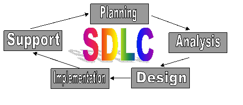
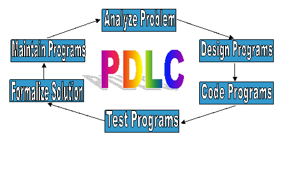

CIST 1305 Lesson 05 Planning Your Program
| Lesson Topic | PDLC / Methodology | Notes |
|---|---|---|
| Objectives | The CIST 1305 students at the end of this lesson should:
|
|
| Introduction / Warm-up | Introduction to class
|
|
| New Information | The System Development Life Cycle
is not just for software development;
it's for any kind of project development you may encounter.  The Program Development Life Cycle is part of the SDLC; it's part of the Implementation phase. This is a bit more detail about the PDLC:1. Analyze Problem
|
|
| Key Points | Notice that the SDLC nor the PDLC ever ends; the development cycle is continuous. | |
| Applying New Information | Thing about other things that are continuous. What happens if something is added to the program? What happens if the inputs or outputs need to be modified? |
|
| Assignment |
What are the 6 steps in the PDLC? How do we get from the inputs to the outputs? Read Lesson 6. | |
| Closure | You need to understand programs are always subject to change. |
Copyright © 2015 NGTC
This page passes HTML and CSS validation services and Web Accessibility Checker